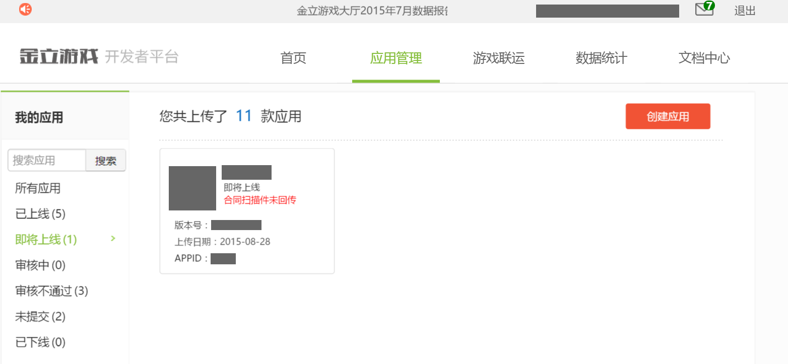
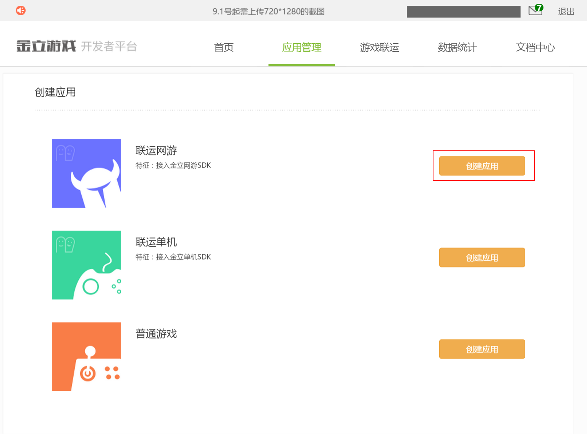
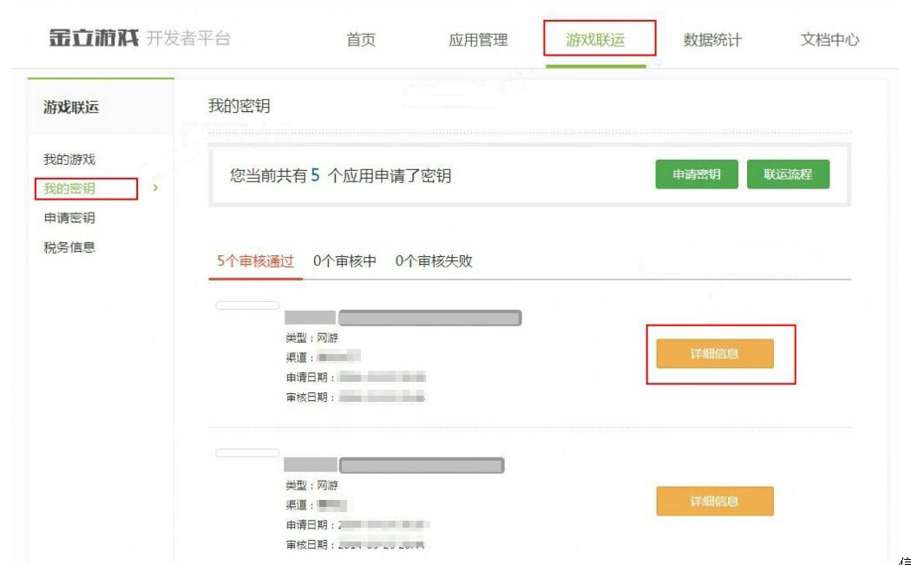
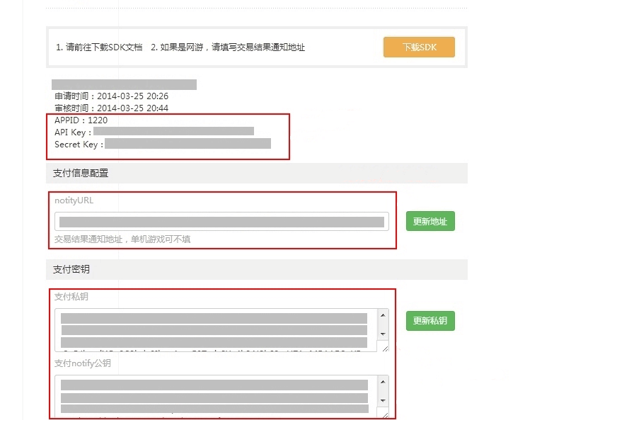
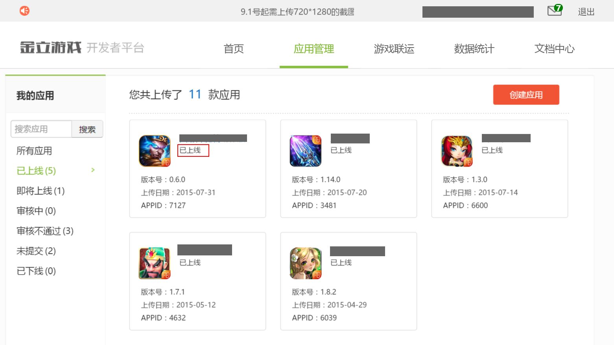

金立官方后台地址：http://dev.game.gionee.com/
西瓜SDK所需的参数APPID、API Key、Secret Key、公钥、私钥均在金立后台获取。
获取参数步骤： 1. 注册开发者账号；
2. 登录金立渠道后台，点击“创建应用”；

3. 选择“联运网游”，点击“创建应用”，上传文件；

4. 点击“游戏联运”——>“我的密钥”——>选择游戏并点击对应的“详细信息” ；

5. 获取APPID、API Key、Secret Key、公钥、私钥如下所示；

6. 当游戏状态显示为“已上线”时即表示通过渠道审核成功上线。
